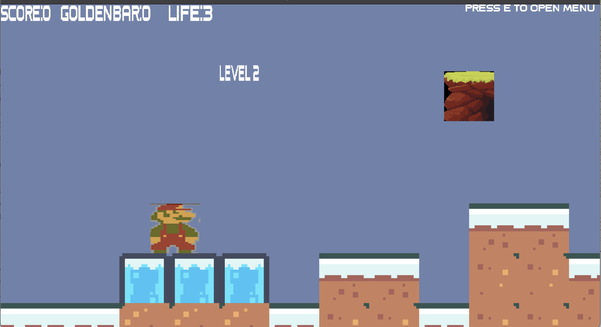
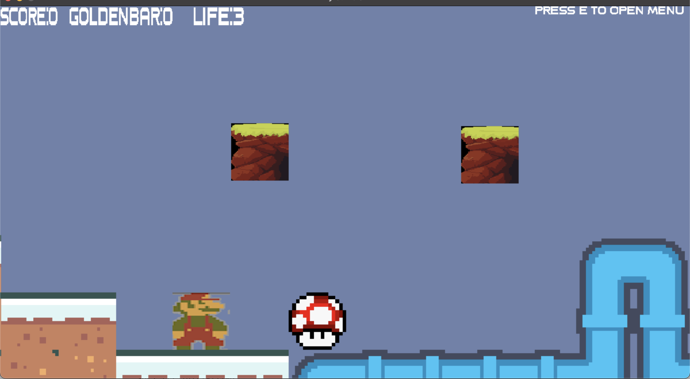
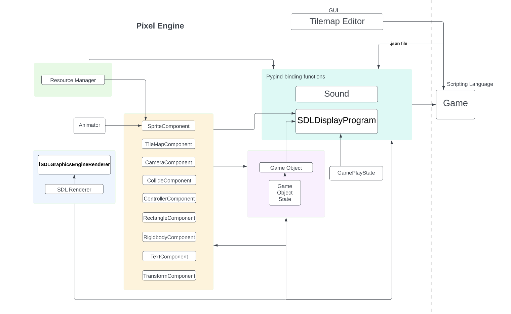
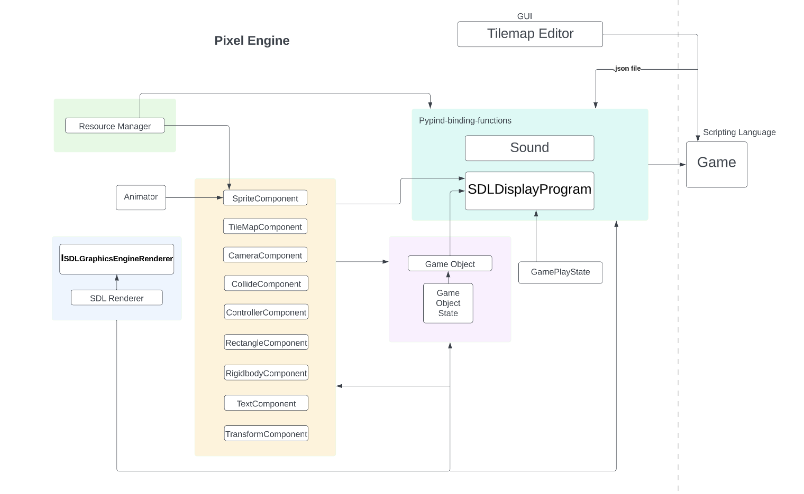

Screenshots




Visualization & creation tool - flexible tilemap editor: with the flexible tilemap editor, the user can create a long tilemap from scratch with only 1 sprite. The tilemap editor provides options for different sizes of chunks and supports many operations (such as undo and customized grid sizes). Users can easily use this tool to design and make a tilemap for their levels.
Visualization mode - Also, with the development-mode of game engine, the user can quickly preview all the game objects and tilemap positions, so that they can adjust accordingly.
Self-made physics system: we wrote our own physics effects. The game engine supports rigidbody and collision, and also users can use velocity and more game object state to track and calulate for their own use.
Briefly, we provide users with options of visualized game development tools and modes, as well as our own physics systems.
 

In this paragraph, we describe how we would further develop the project if given more time. For this project, if we had additional time, we would have incorporated more features into the game engine, such as improvements to the tilemap editor, and so on. For instance, we could have made the tilemap editor more user-friendly by adding a button to delete cells or implementing a zoom in/out feature. For the game engine, we would have liked to add a GUI system, enabling game developers to easily incorporate GUI elements into their games. As for the game itself, we would have expanded it with more levels and a greater variety of enemies. Moreover, we would like to add a new component: a particle system. This addition would significantly enhance the game's visual effects and create a more immersive experience for players. One specific implementation of the particle system would be to create a fireball effect. The fireball is a classic element in the Super Mario series, allowing Mario to throw balls of fire at enemies, and its inclusion would provide an additional layer of complexity and fun to the gameplay. To achieve this, we would design and develop custom particle emitters to generate the fireball's appearance and physics, as well as handle its interactions with the game world and its various elements, such as enemies and destructible objects.
In this paragraph, we describe what went well during the project development. About The technical part, we took time in designing and improving the architecture, structure and data-driven approach and game object with component pattern. It worked well during implementation phase as new components are easier to be inserted into a structured system. Teamwork wise, there are also several things that were great during the development. Firstly, we had great communication and collboration when making design decision, distributing implementation tasks, and supporting each other in the team when testing and adjusting. In this well-organized collaboration, we had high efficiency delivering code and testing. Secondly, we endeavored a lot to realize our planned items, and we tried our best to explore and handle new or unfamiliar techniques. During the development, we balanced flexibility and persistency to reach the goal of completing the tasks in the given time. Thirdly, we used many perspectives during the development, such as software engineers' mindset, game designers' mindset and gameplayers' perspective to make sure we create good game engine, tilemap editor tool, and sameple game. We were motivated to always improve our code and take care of the details to make sure users have better experience using our game enine and tilemap editor and playing our game.
In this paragraph, we describe what we would change if given another month to work on the project. One thing that we would like to do is to use GUI and allow users to enter names and values for the data-driven approach when setting up the game (for example, putting game characters, and other game objects). For example, when adding a new game object, use can use "Add" button, and add components with some input fields to fill in any required values.